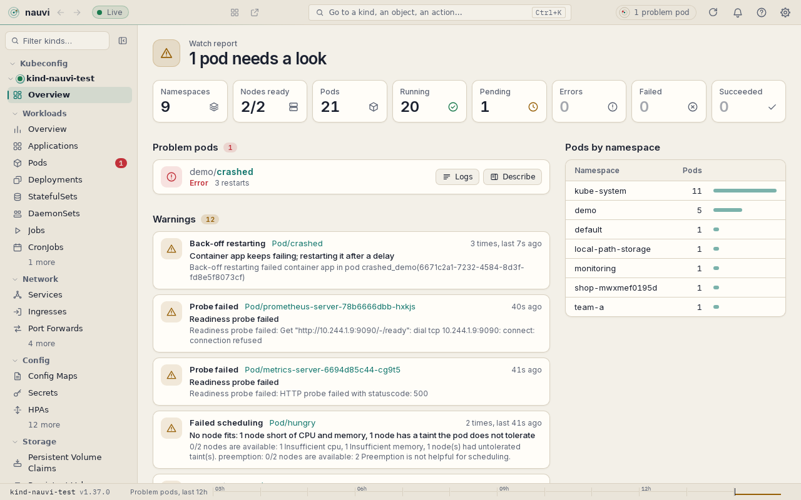
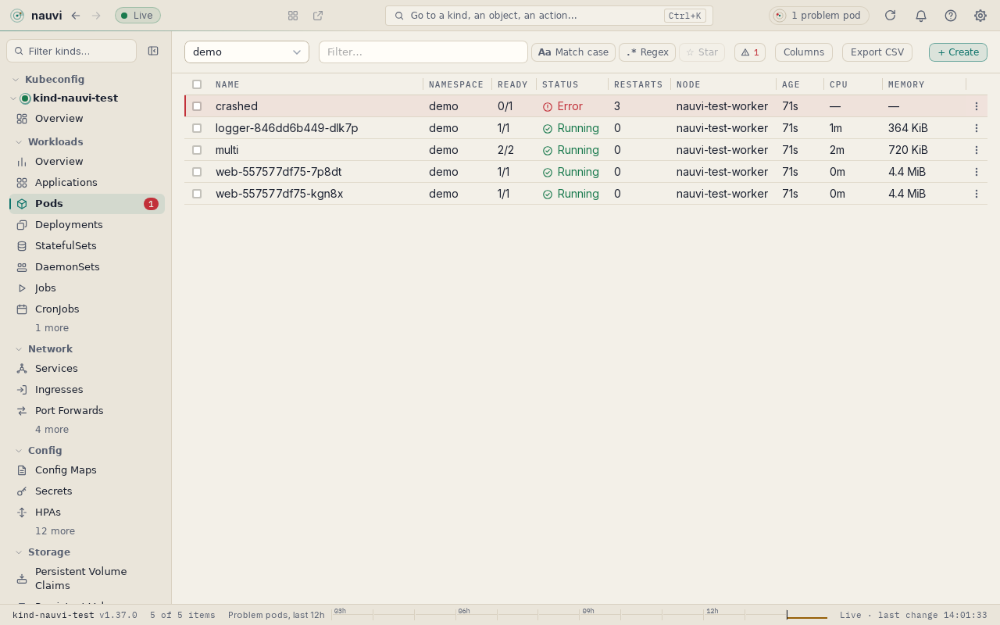
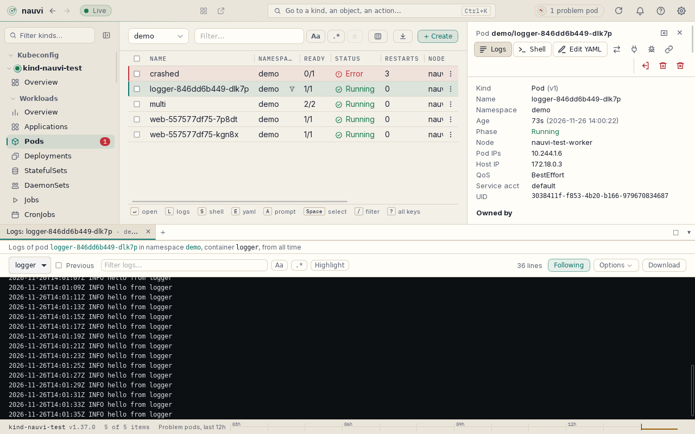
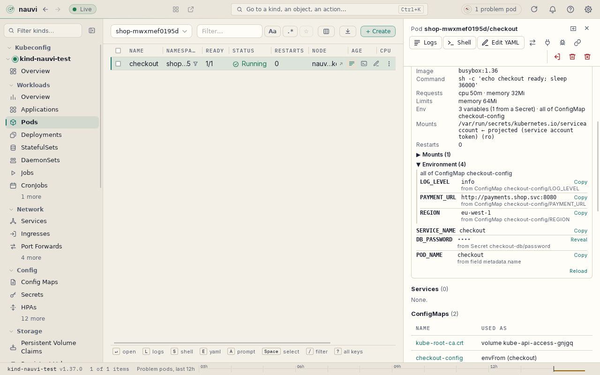
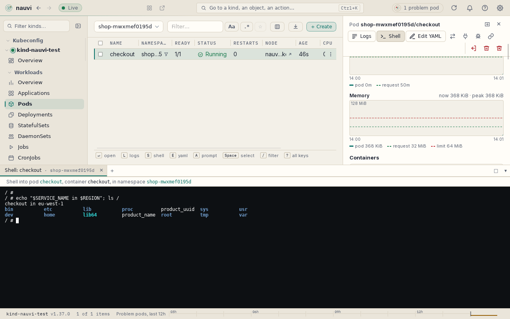

Kubernetes IDE · desktop app + CLI
Keep the watch on your clusters, without the wait.
nauvi is a fast Kubernetes IDE written in Rust. The desktop app and the nauvi CLI share one core: live watches of every resource type, logs, terminals, port forwards and YAML editing, on Linux, macOS and Windows.

Install
The desktop app and the CLI install separately. Every release is checked against its SHA256SUMS before anything is installed. All install options.
Linux & macOS
The desktop app
curl -fsSL https://raw.githubusercontent.com/nexburst/nauvi/main/install.sh | shOnly the CLI (nauvi)
curl -fsSL https://raw.githubusercontent.com/nexburst/nauvi/main/install.sh | sh -s -- --cliNo sudo. The script checks every file against the release's SHA256SUMS. On Linux it installs the AppImage as ~/.local/bin/nauvi-desktop with a menu entry; on macOS nauvi.app into Applications. Because curl sets no quarantine flag, macOS opens the app without the "could not verify" prompt. Run it again to upgrade.
Debian & Ubuntu
Add the signed apt repository and install
curl -fsSL https://raw.githubusercontent.com/nexburst/nauvi/main/install-apt.sh | sudo shThe script refuses the repository key unless its fingerprint is B2B644E79A85C438FC3EB8C5408A65C769395FBF. After that, sudo apt upgrade keeps nauvi up to date. The package is the desktop app (x86_64); for the CLI use the Linux & macOS script with --cli.
Homebrew
The desktop app (macOS)
brew install --cask nexburst/tap/nauviThe CLI (macOS and Linux)
brew install nexburst/tap/nauvi-cliIf Homebrew refuses the tap, run brew trust nexburst/tap first. The app is not signed yet: the first launch says "Apple could not verify…". Click Done, then System Settings → Privacy & Security → Open Anyway.
Windows
The desktop app (PowerShell)
irm https://raw.githubusercontent.com/nexburst/nauvi/main/install.ps1 | iexOnly the CLI
& ([scriptblock]::Create((irm https://raw.githubusercontent.com/nexburst/nauvi/main/install.ps1))) -CliThe app comes from the .msi and updates itself; the CLI goes to %LOCALAPPDATA%\nauvi\bin. The builds are not signed yet, so SmartScreen may say "Windows protected your PC": click More info, then Run anyway.
What it looks like




What it does
Every resource type, live
Built-in kinds and CRDs, found through API discovery and kept current by Kubernetes watches, not polling. Smooth with thousands of rows.
Pod and workload logs
Follow one container, the crashed previous one, or every pod of a Deployment in one stream, through rollouts.
Terminals and port forwards
Shells in pods, ephemeral debug containers, node shells and saved port forwards to pods, Services and workloads.
YAML with server-side apply
Edit any object; nauvi tells you which fields it took over from other managers. Create from YAML with a dry run first.
Actions that ask first
Scale, restart, cordon, drain, evict, trigger and delete, greyed out when RBAC says no, with the exact objects listed before anything changes.
Helm
Releases read straight from the cluster, values and manifests, a diff between revisions, install and upgrade with a dry run.
Many clusters at once
A tree of every kubeconfig context, each in its own colour. Read-only and protected modes, enforced by the backend.
Ask AI
Open your own AI coding CLI, pointed at the cluster or object on screen, with the
nauviskill that teaches it how to look at a cluster.The CLI
nauvi get,logs,exec,port-forward,drainand more, built on the same core, with output made for scripts.
Measured, not promised
Numbers from CI runs on Linux. Budgets are checked on release builds, so a change that breaks one fails.
- 234 MB
- idle memory of the whole app (PSS), on the Overview of a kind cluster
- ≤ 5 MB
- backend memory per extra connected, idle cluster (budget)
- ≤ 1.5 s
- until the cluster tree shows, with 50 contexts and 49 of them unreachable (budget)
- +10 MB
- app process growth with a 5,016-row table open
- 8.8 MB
- the Windows installer; the Linux
.debis 15.6 MB - 16 ms
- to open a new connection through a port forward on kind (median)